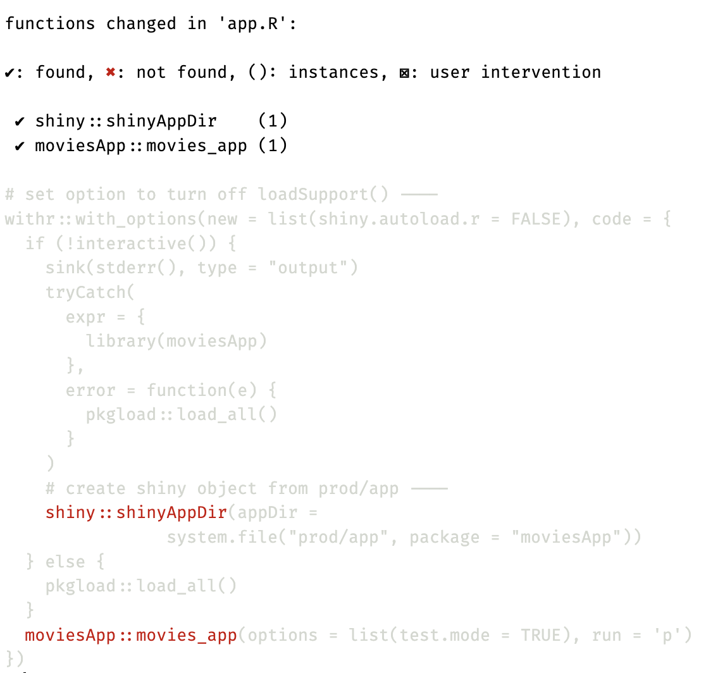

17 Code tools
“…this is the business of keystrokes and neurons”
17.1 Code style and formatting
During development, it can be challenging to keep the code-base looking clean and perfect. Fortunately, the R ecosystem has some excellent tools for keeping your code formatted and easy to read.
The lintr and styler packages in R serve related but distinct purposes and have different focuses in their functionality. The primary difference between lintr and styler is that styler can automatically fix any stylistic issues it identifies in your code (rather than just reporting them).
17.1.1 lintr
lintr is a static code analysis tool used to identify syntax errors, semantic issues, and violations of stylistic guidelines in your code. The package contains a list of ‘linters’ for various potential problems and can be customized according to your needs. lintr is designed to help improve your code’s quality and readability by generating reports in the ‘markers’ pane. Running lintr won’t automatically correct the identified issues (you’ll need to fix the linting issues it reports manually).
17.1.2 styler
On the other hand, the purpose of styler is to ensure consistency in the code formatting, which is crucial if you’re working in a team or contributing to open-source projects (like tidyverse packages). The styler package will change your code’s format according to specified style guidelines. These changes include indentation, spaces, and line breaks that adhere to your style guidelines.
While there is some overlap (both packages can help enforce coding style guidelines), lintr is a more general tool for code quality, spotting potential issues and bugs. At the same time, styler focuses on code formatting and can automatically apply fixes. Many developers find combining both can help catch potential issues and ensure a consistent, readable coding style.
17.2 Dependencies
The following packages will help keep your app-package dependencies managed in the DESCRIPTION file and the code below R/:
17.2.1 attachment
attachment was introduced in the golem chapter, but you don’t have to use the golem framework to take advantage of it’s functions. att_amend_desc() will update the package dependencies in the DESCRIPTION file.
attachment::att_amend_desc()Saving attachment parameters to yaml config file
Updating moviesApp documentation
ℹ Loading moviesApp
Writing NAMESPACE
Writing NAMESPACE
ℹ Loading moviesApp
[+] 6 package(s) added: cli, tools, fst, ggplot2movies, glue, waldo.attachment::att_amend_desc() will automatically create a dev/ folder and adds the following configuration file:
dev
└── config_attachment.yaml
1 directory, 1 fileconfig_attachment.yaml contents:
path.n: NAMESPACE
path.d: DESCRIPTION
dir.r: R
dir.v: vignettes
dir.t: tests
extra.suggests: ~
pkg_ignore: ~
document: yes
normalize: yes
inside_rmd: no
must.exist: yes
check_if_suggests_is_installed: yesThis can be deleted, but if you’re going to continue using attachment it’s worth customizing some of the options for your app-package.
17.2.2 sinew
The sinew package also warrants mentioning because it can help ensure you’re namespacing functions from add-on packages, although it’s not automated like attachment::att_amend_desc(). The primary function in sinew is pretty_namespace().
sinew::pretty_namespace(con = "app.R")
17.3 DESCRIPTION files
The desc package provides functions for creating, reading, writing, and manipulating DESCRIPTION files.
library(desc)
desc_set_dep("glue", "Imports")
desc_get("Imports")Imports:
bslib,
cli,
glue,
ggplot2,
logger,
rlang,
sass,
shiny,
shinythemes,
stringr,
tools